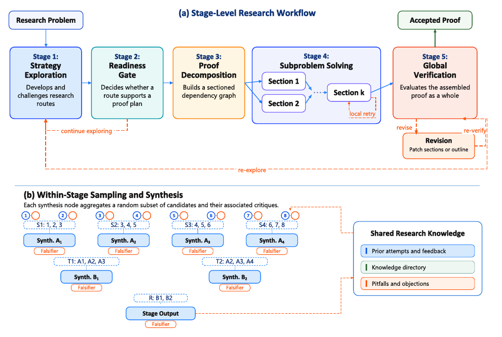

Stellar Colosseum: A Many-Agent Harness for Long-Horizon Research in Mathematics and TCS
TL;DR
- Honghao Lin and David P. Woodruff (co-first authors) with Yuan Deng, Jieming Mao, Song Zuo and Vahab Mirrokni at Google Research build Colosseum, a model-agnostic harness that treats a research problem as a five-stage pipeline — strategy exploration, a readiness gate, dependency-aware decomposition, parallel subproblem solving, global verification — with adversarial falsification and tree-structured aggregation running inside every stage.
- It produces real results, not just benchmark numbers: five new theorems addressing open problems from FOCS and JMLR papers, including improving strong-coreset size for \(\ell_p\) subspace approximation from \(\tilde{O}_p(k^{p/2}\varepsilon^{-p})\) to \(\tilde{O}_p(k^{p/2}\varepsilon^{-2})\), plus 46- and 75-page proof drafts for Knuth's cycles problem.
- On TCS-Bench (300 research-level theorem-proving tasks from FOCS/STOC/SODA), Colosseum reaches 71.0% via cross-model selection between a Gemini 3.1 Pro run and a Gemini 3.7 Flash run — against 30.3% for Gemini 3.1 Pro called directly and 68.0% for GPT-5.6 Pro (max). On a 222-problem Codeforces suite it solves 218 with a C++ execution probe, 213 without.
Why this matters
Most inference-scaling machinery assumes a checkable final answer: sample \(N\) reasoning paths, vote, done. Research proofs break that assumption in a way the paper states plainly — agreement among candidates can hide a shared error, so a flat vote over final answers offers almost no guidance. Worse, a research problem is a chain of interdependent decisions, where a lemma that turns out false invalidates work three sections downstream.
Colosseum is the most complete published attempt I've seen at spending inference compute on that structure, and it is unusually credible because the evaluation isn't only a benchmark: the harness contributed to five results written up in companion papers, and the workflow shipped into Google Antigravity's Teamwork framework as the "Long Proof" pattern. For this tracker's self-improving-harness thread, it is a strong data point that harness design, with weights untouched, still has large returns at the frontier.

Figure 1 from the paper. Panel (a): the stage-level workflow with local retry, revision and re-exploration loops. Panel (b): inside a stage, synthesis nodes aggregate overlapping random subsets of candidates, each node paired with a falsifier, feeding a shared research knowledge store.
The core idea
Two ideas do the work, one at each level.
At the workflow level: gate decomposition on readiness, not on optimism. Colosseum does not draft a proof around the first plausible idea. It develops competing routes in parallel, then applies a readiness gate asking whether a route is concrete enough to support a proof plan — not whether the proof is nearly done. A route passes when its central reduction or mechanism is stable, its unresolved claims are precise enough to assign to sections, and no unresolved bridge is likely to change the target or the architecture of the argument. A central lemma may still be hard; what matters is that its statement and role are explicit. Once through, the decomposer emits a numbered, sectioned skeleton whose dependency edges form a DAG, so independent sections proceed in parallel and a rejected section retries locally without discarding completed work elsewhere.
At the stage level: aggregate candidates with their critiques attached, through a tree. Comparing every candidate and critique in one prompt does not scale. Let \(z_i\) be a candidate bundled with all of its falsification records, and \(C^{(0)} = \{z_1,\dots,z_n\}\) the initial population. The tree shape is a width schedule
where \(m_\ell\) is the number of nodes at level \(\ell\). Each of the \(m_{\ell+1}\) aggregation nodes independently draws \(k_\ell\) distinct inputs uniformly from the current population:
Sampling is without replacement within a group, but groups at different nodes are drawn independently and may overlap — they deliberately do not form a partition. Given the stage aggregator \(A\), input artifact \(x\) and contextual evidence \(K\), node \(j\) computes \(s_j^{(\ell+1)} = A(x, K, G_j^{(\ell)})\). The overlap is quantified by the expected reuse of a fixed level-\(\ell\) node:
Contraction layers are configured for expected reuse of roughly two to three — 128 nodes contracting to 64 with sample size five gives 2.5 — so each candidate gets several chances to contribute while every aggregation context stays small.
The critical design choice is what aggregation does. It is explicitly not a vote or a ranking: it may merge compatible components, retain competing branches, repair a localized flaw, or declare an unresolved conflict. Substantive disagreements and falsification evidence are carried forward rather than averaged away, and the root returns a synthesized candidate together with any unresolved objections.
How it works
Colosseum(problem P)
1. state <- {} # prior attempts, knowledge directory, pitfalls
2. loop:
3. # Stage 1-2: explore strategies until a route is decomposable
4. routes <- STAGE(explore, P, state) # tree widths (32,16,8,5,1), k=5
5. if not readiness_gate(routes): # is the mechanism stable?
6. continue # keep exploring
7.
8. # Stage 3: sectioned skeleton + dependency DAG
9. skeleton <- decompose(selected_route)
10.
11. # Stage 4: solve eligible subproblems in parallel
12. for section in topological_order(skeleton):
13. sec <- STAGE(solve, section, completed_dependencies)
14. while local_reviewer(sec) finds a defect:
15. sec <- STAGE(solve, section, deps + failed_sec + review) # local retry only
16. commit(sec)
17.
18. # Stage 5: verify the assembled argument as one object
19. verdict, defects <- STAGE(verify, assembled_proof) # tree-aggregated reviews
20. if verdict == accept: return assembled_proof
21. state <- state + {draft, defects, knowledge_directory}
22. if strategy_still_viable(defects): revise sections or outline
23. else: goto 3 # re-explore
STAGE(task, x, ctx): # the same three ops everywhere
a. generate n typed candidates in parallel # varied seeds, temps, perspectives, lines of attack
b. attack each with targeted falsifiers # counterexamples, circularity, hypothesis drift,
c. reduce through the aggregation tree, # statement/target mismatch, missing assumptions
keeping each candidate bundled with its critiques
Two supporting mechanisms make the loop compound across rounds. When a round fails, the draft and the verifier's feedback are passed forward intact, with objections still attached, so the next attempt doesn't restart from the bare problem. Separately, a knowledge curator records four kinds of reusable findings from strategy proposals and falsification reports: theorems and lemmas developed along the way, failed approaches with their precise failure points, references with the hypotheses that matter here, and structural or computational observations. That directory is what lets a later round avoid re-running an approach already known to fail.
Global verification deserves one note: it is itself multiple independent reviews plus tree aggregation, and explicitly not a majority vote. A single concrete fatal defect rejects the proof, and generic acceptance judgments do not overturn it. Each defect is tied to the section where it arises, and for a cross-section dependency error the review names both the supporting section and the consumer — which makes the feedback routable rather than a flat list of complaints.
Results
TCS-Bench (300 theorem-proving tasks from FOCS/STOC/SODA papers, 2020–2026; graded by a reference-assisted automated grader whose prompt was tuned on 100 expert-labeled proofs, reporting >90% accuracy):
| Method | Accuracy |
|---|---|
| Gemini 3.1 Pro (direct) | 30.3% |
| Gemini 3.1 DeepThink | 52.0% |
| GPT-5.6 Pro (max) | 68.0% |
| Colosseum with Gemini 3.1 Pro | 54.0% |
| Colosseum with Gemini 3.7 Flash | 55.0% |
| Cross-model selection | 71.0% |
| Oracle best-of-two | 77.3% |
The harness is worth ~24 points on Gemini 3.1 Pro (30.3 → 54.0). The jump to 71.0% comes from something else: the two runs have nearly identical accuracy but complementary errors, so selecting between them adds 48 problems over the stronger single run. The selection rule is cheap and worth copying — Gemini 3.7 Flash produces eight independent critiques of the Pro proof, and if at least five judge it correct it is submitted, otherwise the Flash proof is. That critique signal separates grader-correct from grader-incorrect proofs with AUC 0.896; routing on Gemini 3.1 Pro's own internal verifier instead yields only 64.7%. Cross-model critique beats self-verification by a wide margin.
Codeforces: all 222 problems with clist.by difficulty above 1500 from contests 2084–2162 (April–October 2025), median difficulty 2381. Solutions are compiled and run against the full hidden test set with the original checker, accepted only if every test passes. The only addition to the proof-oriented pipeline is a C++ execution probe that runs candidates on public samples and model-generated stress inputs, feeding checker outcomes back into the existing verification–revision loop.
| Configuration | Accepted | Performance rating |
|---|---|---|
| Without execution probe | 213 / 222 | 3918 |
| With execution probe | 218 / 222 | 4263 |
The rating is computed explicitly rather than borrowed, treating a problem of difficulty \(r\) as an opponent beaten with probability \( 1/(1 + 10^{(r-x)/400}) \) and solving for the \(\hat{x}\) matching the observed solve count; the authors stress it is corpus- and calibration-dependent, not an official contestant rating. What matters architecturally is that the proof pipeline transferred to executable code with one addition — the decomposer emits a DAG of mathematical and algorithmic subproblems with a terminal C++ implementation node, rather than partitioning a program into software components.
Open problems. Five results, each written up in a companion paper: the \(\ell_p\) coreset improvement above; a condition-number barrier for sparse least squares showing no fixed sublinear power of \(\kappa\) can replace the linear dependence, conditional on the randomized exact-volume Small-Set Expansion Hypothesis; a near-tight dimension lower bound \(D \ge m^{c_\delta/\varepsilon^{2-2\delta}}\) for maximum-inner-product embeddings; a single-stage Hadamard quantizer matching the \(1/(d 4^b)\) MSE scaling while dropping the residual stage; and a prefix-matrix factorization lower bound \(\gamma_{2,1}(Q) = \Omega(\log^{3/2} n / (\log\log n)^{3/2})\), within \((\log\log n)^{3/2}\) of the known upper bound. The Erdős unit-distance case study is the most striking: run with internet access disabled, over 15 exploration rounds, Colosseum produced a 22-page draft that independently arrived at the central architecture of OpenAI's reported solution.
How it connects
- The clearest "harness, not weights" result yet. Argus makes long-horizon pivots admissible only when evidence-backed and role-gated; Colosseum's readiness gate is the same instinct applied one level earlier — gate the transition from exploring to committing. Both keep model weights frozen and get large gains from control flow.
- It inverts the usual aggregation assumption. LLM-as-a-Verifier treats verification as a scaling axis; Colosseum agrees but refuses to collapse verification into a score. Critiques stay bundled with the candidates they attack through every aggregation level, precisely because a vote over final answers can be confidently and unanimously wrong.
- Cross-model selection is the cheap lesson. NVIDIA's model-pool study, added to the tracker the same day, found that mixed-model pools usually underperform the best single model in the pool and that same-family ensembles win. Colosseum is the apparent counterexample that actually clarifies the rule: mixing helped here not because two models were averaged, but because one model critiqued the other's artifact and a threshold routed between them.
- Failure memory over success memory. The knowledge directory's second category — failed approaches with precise failure points — matches what AdaExplore does with compile/runtime failures turned into constraint rules, and what CORAL preserves across evolutionary rounds. Recording why a route died is repeatedly more valuable than recording what worked.
- A counterweight to research-agent pessimism. AIRA₂ formalized how validation-based selection overfits over long horizons. Colosseum's answer is that selection should be adversarial and localized rather than score-based and global — an architectural response to the same bottleneck.
Critical take
The headline 71.0% is a two-run cross-selection number and should be read as such. The single-harness results are 54.0% and 55.0% — real, large gains over direct calling, but below GPT-5.6 Pro's 68.0%. That comparison deserves more prominence than it gets: a competitor model called directly beats this harness on Gemini 3.1 Pro, and the harness only pulls ahead once you pay for two full runs plus eight critique samples. Cost accounting is absent throughout; the paper says outright that its configurations specify tree widths rather than total model calls, which depend on section count, local retries and revision rounds. With 32-leaf exploration trees, 16 leaves elsewhere, falsifiers on every node and multi-round re-exploration, the per-problem spend is likely enormous and nowhere stated. "71.0% vs 68.0%" means little without it.
The open-problem results are the strongest evidence and the hardest to evaluate. They are genuine contributions in a hard area, but the author list includes Woodruff and Mirrokni, and several results extend Woodruff's own prior work — the \(\ell_p\) coreset improvement tightens a bound from Woodruff and Yasuda. That is not a flaw; expert-in-the-loop is how these systems will actually be used. It does mean "the harness solved open problems" is doing less work than it sounds like, and the paper's own framing ("the workflow contributed to") is more accurate than the summaries circulating on X.
Finally, TCS-Bench is scored by an automated grader that sees the ground-truth proof and self-reports >90% accuracy on a 100-proof calibration set. For research-level proofs whose failure mode is a subtle invalid implication three sections in, a 10% grader error rate is the same order as the gaps between the methods being compared.
If you remember three things
- Gate the commitment, not the answer. The readiness gate asks whether remaining uncertainty can be localized within a stable proof architecture — not whether the proof is nearly finished. That single decision is what makes decomposition into a dependency DAG safe, and it is transplantable to any long-horizon agent that must choose when to stop exploring.
- Aggregate with critiques attached, and never by vote. Candidates travel through the reduction tree bundled with their falsification records, overlapping groups give each candidate ~2–3 chances to contribute, and one concrete fatal defect rejects a proof regardless of how many reviews accept it.
- Cross-model critique beat self-verification by 6+ points. Flash critiquing Pro separated correct from incorrect proofs at AUC 0.896 and routed to 71.0%; Pro's own internal verifier managed 64.7%. When you have two comparable models, have one attack the other's artifact rather than averaging them.